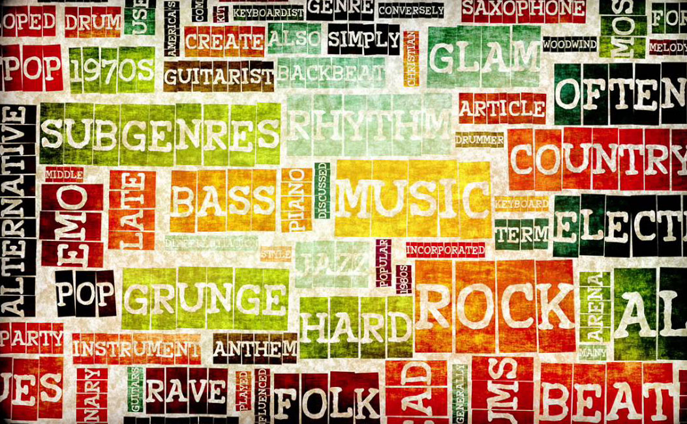

Projets
The Hottest Topics in Machine Learning
Neural Information Processing Systems (NIPS) is one of the top machine learning conferences in the world where groundbreaking work is published. In this Project, you will analyze a large collection of NIPS research papers from the past decade to discover the latest trends in machine learning. The techniques used here to handle large amounts of data can be applied to other text datasets as well.

Classify Song Genres from Audio Data
Using a dataset gathering informations about songs of two music genres (Hip-Hop and Rock), we train a classifier to distinguish the genre based only on track information. We first explore and test the data for obvious trends or factors we should be aware of when doing machine learning. Next, we predict whether we can correctly classify a song's genre based on features such as danceability, energy, acousticness, tempo, etc. We go over implementations of common algorithms such as PCA, logistic regression, or decision trees.
Exploring the Bitcoin Cryptocurrency Market
Since the launch of Bitcoin in 2008, hundreds of similar projects based on the blockchain technology have emerged. We call these cryptocurrencies (also coins or cryptos in the Internet slang). Some have become extremely valuable in recent years, and others might have the potential to become extremely valuable in the future. In fact, the 6th of December of 2017 Bitcoin has a market capitalization above $200 billion. Let's get a better insight on the cryptocurrencies market with some quantitative and visual EDA.